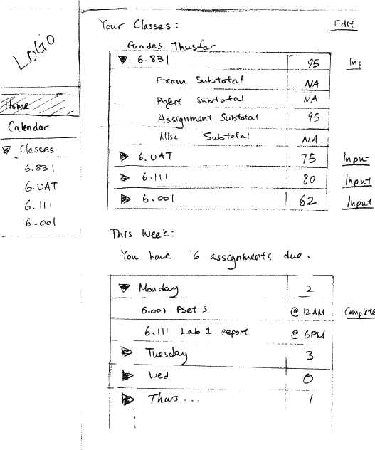
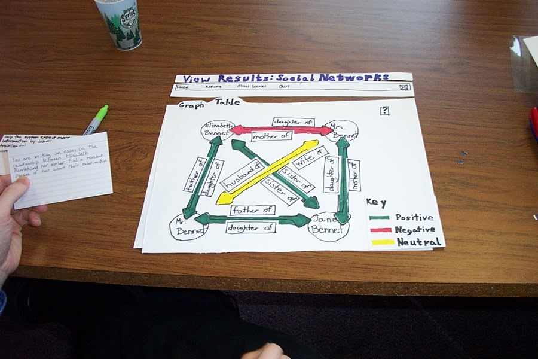

Use [Hypothesis](https://hypothes.is/) for discussion, Q&A, and additional examples or references to improve the material.
User-Centered Design
- Iterative design
- Early focus on users and tasks
- Constant evaluation
The standard approach to designing user interfaces is **user-centered design**, which has three components.
We'll talk about the first two today; we'll defer evaluation (testing with users) until a later reading.
Iterative Design
Iterative Design

Traditional Software Engineering Process: Waterfall Model

Let's contrast the iterative design process against another way. The **waterfall model** was one of the earliest carefully-articulated design processes for software development. It models the design process as a sequence of stages. Each stage results in a concrete product - a requirements document, a design, a set of coded modules - that feeds into the next stage. Each stage also includes its own **validation**: the design is validated against the requirements, the code is validated (unit-tested) against the design, etc.
The biggest improvement of the waterfall model over previous (chaotic) approaches to software development is the discipline it puts on developers to **think first, and code second**. Requirements and designs generally precede the first line of code.
If you've taken a software engineering course, you've experienced this process yourself. The course staff probably handed you a set of requirements for the software you had to build --- e.g., the specification of a chat client or AntiBattleship. (In the real world, identifying these requirements would be part of your job as software developers.) You were then expected to meet certain milestones for each stage of your project, and each milestone had a concrete product: (1) a design document; (2) code modules that implemented certain functionality; (3) an integrated system.
Validation is not always sufficient; sometimes problems are missed until the next stage. Trying to code the design may reveal flaws in the design - e.g., that it can't be implemented in a way that meets the performance requirements. Trying to integrate may reveal bugs in the code that weren't exposed by unit tests. So the waterfall model implicitly needs **feedback between stages**.
The danger arises when a mistake in an early stage - such as a missing requirement - isn't discovered until a very late stage - like acceptance testing. Mistakes like this can force costly rework of the intervening stages. (That box labeled "Code" may look small, but you know from experience that it isn't!)
Waterfall Model Is Bad for UI Design
- User interface design is risky
- So we're likely to get it wrong
- Users are not involved in validation until acceptance testing
- So we won't find out until the end
- UI flaws often cause changes in requirements and design
- So we have to throw away carefully-written and tested code
Although the waterfall model is useful for some kinds of software development, it's very poorly suited to user interface development.
First, UI development is inherently **risky**. UI design is hard for all the reasons we discussed in the first class. (You are not the user; the user is always right, except when the user isn't; users aren't designers either.) We don't (yet) have an easy way to predict how whether a UI design will succeed.
Second, in the usual way that the waterfall model is applied, **users appear in the process in only two places**: requirements analysis and acceptance testing. Hopefully we asked the users what they needed at the beginning (requirements analysis), but then we code happily away and don't check back with the users until we're ready to present them with a finished system. So if we screwed up the design, the waterfall process won't tell us until the end.
Third, when UI problems arise, they often **require dramatic fixes**: new requirements or new design. We saw in Lecture 1 that slapping on patches doesn't fix serious usability problems.
Iterative Design
**Iterative design** offers a way to manage the inherent risk in user interface design. In iterative design, the software is refined by repeated trips around a design cycle: first imagining it (design), then realizing it physically (implementation), then testing it (evaluation).
In other words, we have to admit to ourselves that we aren't going to get it right on the first try, and plan for it.
Using the results of evaluation, we redesign the interface, build new prototypes, and do more evaluation.
Eventually, hopefully, the process produces a sufficiently usable interface.
Sometimes you just iterate until you're satisfied or run out of time and resources, but a more principled approach is to set usability goals for your system. For example, an e-commerce web site might set a goal that users should be able to complete a purchase in less than 30 seconds.
Many of the techniques we'll learn in this course are optimizations for the iterative design process: design guidelines reduce the number of iterations by helping us make better designs; cheap prototypes and discount evaluation techniques reduce the cost of each iteration. But even more important than these techniques is the basic realization that in general, **you won't get it right the first time**. If you learn nothing else about user interfaces from this class, I hope you learn this.
You might object to this, though. At a high level, iterative design just looks like the worst-case waterfall model, where we made it all the way from design to acceptance testing before discovering a design flaw that *forced* us to repeat the process. Is iterative design just saying that we're going to have to repeat the waterfall over and over and over? What's the trick here?
Spiral Model

The **spiral model** offers a way out of the dilemma. We build room for several iterations into our design process, and we do it by making the early iterations as cheap as possible.
The radial dimension of the spiral model corresponds to the cost of the iteration step - or, equivalently, its **fidelity** or **accuracy**. For example, an early implementation might be a paper sketch or mockup. It's low fidelity, only a pale shadow of what it would look and behave like as interactive software. But it's incredibly cheap to make, and we can evaluate it by showing it to users and asking them questions about it.
Early Prototyping
Sketches


Paper Prototypes


Computer Mockups


Here are some examples of early-stage prototyping for graphical user interfaces. We'll talk about these techniques and more in a future Prototyping reading.
Early Prototypes Can Detect Usability Problems
Remember this Hall of Shame candidate from the first class? This dialog's design problems would have been easy to catch if it were only tested as a simple paper sketch, in an early iteration of a spiral design. At that point, changing the design would have cost only another sketch, instead of a day of coding.
Iterative Design of User Interfaces
- Early iterations use cheap prototypes
- Parallel design is feasible: build & test multiple prototypes to explore design alternatives
- Later iterations use richer implementations, after UI risk has been mitigated
- More iterations generally mean better UI
- Only mature iterations are seen by the world
Why is the spiral model a good idea? Risk is greatest in the early iterations, when we know the least. So we put our least commitment into the early implementations. Early prototypes are made to be thrown away. If we find ourselves with several design alternatives, we can build multiple prototypes (**parallel design**) and evaluate them, without much expense. The end of this reading will make more arguments for the value of parallel design.
After we have evaluated and redesigned several times, we have (hopefully) learned enough to avoid making a major UI design error. Then we actually implement the UI - which is to say, we build a prototype that we intend to keep. Then we evaluate it again, and refine it further.
The more iterations we can make, the more refinements in the design are possible. We're hill-climbing here, not exploring the design space randomly. We keep the parts of the design that work, and redesign the parts that don't. So we should get a better design if we can do more iterations.
Case Study of User-Centered Design: The Olympic Message System
- Cheap prototypes
- Scenarios
- User guides
- Simulation (Wizard of Oz)
- Prototyping tools (IBM Voice Toolkit)
- Iterative design
- 200 (!) iterations for user guide
- Evaluation at every step
- You are not the user
- Non-English speakers had trouble with alphabetic entry on telephone keypad

The Olympic Message System is a classic demonstration of the effectiveness of user-centered design (Gould et al, "The 1984 Olympic Message System", CACM, v30 n9, Sept 1987). The OMS designers used a variety of cheap prototypes: scenarios (stories envisioning a user interacting with the system), manuals, and simulation (in which the experimenter read the system's prompts aloud, and the user typed responses into a terminal). All of these prototypes could be (and were) shown to users to solicit reactions and feedback.
Iteration was pursued aggressively. The user guide went through 200 iterations!
The OMS also has some interesting cases reinforcing the point that the designers cannot rely entirely on themselves for evaluating usability. Most prompts requested numeric input ("press 1, 2, or 3"), but some prompts needed alphabetic entry ("enter your three-letter country code"). Non-English speakers - particularly from countries with non-Latin languages - found this confusing, because, as one athlete reported in an early field test, "you have to read the keys differently." The designers didn't remove the alphabetic prompts, but they did change the user guide's examples to use only uppercase letters, just like the telephone keys.
A video about OMS [can be found on YouTube](http://youtube.com/watch?v=W6UYpXc4czM&feature=related). Check it out---it includes a mime demonstrating the system.
Needfinding
Techniques for Understanding Users & Tasks
- Interviews & observation
- Contextual inquiry technique
- Interviews & observation conducted "in context", i.e., with real people dealing with the real problem in the real environment
- Establish a master-apprentice relationship
- User shows how and talks about it
- Interviewer watches and asks questions
- Participatory design technique
- Including a user directly on the design team
The best sources of information for needfinding are user interviews and direct observation. Usually, you'll have to observe how users currently solve the problem. For the OMS example, we would want to observe athletes interacting with each other, and with family and friends, while they're training for or competing in events. We would also want to interview the athletes, in order to understand better their goals.
A good collection of information-collection techniques is summarized by [Need Finding Tools](http://dsoftware.stanford.edu/handouts/NeedFindingCribSheet.pdf).
**Contextual inquiry** is a technique that combines interviewing and observation, in the user's actual work environment, discussing actual work products. Contextual inquiry fosters strong collaboration between the designers and the users. (Wixon, Holtzblatt & Knox, "Contextual design: an emergent view of system design", CHI '90)
**Participatory design** includes users directly on the design team - participating in needfinding, proposing design ideas, helping with evaluation. This is particularly vital when the target users have much deeper domain knowledge than the design team. It would be unwise to build an interface for stock trading without an expert in stock trading on the team, for example.
Know Your User
- Things to learn
- Age, gender, culture, language
- Education (literacy? numeracy?)
- Physical limitations
- Computer experience (typing? mouse?)
- Motivation, attitude
- Domain experience
- Application experience
- Work environment and other social context
- Relationships and communication patterns with other people
- Pitfall
- describing what you want your users to be, rather than what they actually are
- "Users should be literate in English, fluent in spoken Swahili, right-handed, and color-blind"
The reason for user analysis is straightforward: since you're not the user, you need to find out who the user actually is.
User analysis seems so obvious that it's often skipped. But failing to do it explicitly makes it easier to fall into the trap of assuming every user is like you. It's better to do some thinking and collect some information first.
Knowing about the user means not just their individual characteristics, but also their situation. In what environment will they use your software? What else might be distracting their attention? What is the social context? A movie theater, a quiet library, inside a car, on the deck of an aircraft carrier; environment can place widely varying constraints on your user interface.
Other aspects of the user's situation include their relationship to other users in their organization, and typical communication patterns. Can users ask each other for help, or are they isolated? How do students relate differently to lab assistants, teaching assistants, and professors?
Many problems in needfinding are caused by jumping too quickly into a system design. This sometimes results in wishful thinking, rather than looking at reality. Saying "OMS users should all have touchtone phones" is stating a requirement on the system, not a characteristic of the existing users. One reason we do needfinding is to see whether these requirements can actually be satisfied, or whether we'd have to add something to the system to make sure it's satisfied. For example, maybe we'd have to offer touchtone phones to every athlete's friends and family...
Multiple Classes of Users
Many, if not most, applications have to worry about multiple classes of users.
Some user groups are defined by the roles that the user plays in the system: student, teacher, reader, editor.
Other groups are defined by characteristics: age (teenagers, middle-aged, elderly); motivation (early adopters, frequent users, casual users). You have to decide which user groups are important for your problem, and do a user analysis for every class.
The Olympic Message System case study we saw in an earlier reading identified several important user classes by role.
Identify the User's Goals
The best sources of information are user interviews and direct observation. Usually, you'll have to observe how users currently perform the task. For the OMS example, we would want to observe athletes interacting with each other, and with family and friends, while they're training for or competing in events. We would also want to interview the athletes, in order to understand better their goals in the task.
Common Errors in Needfinding
- Thinking from the system's point of view, rather than the user's
- "Notify user about appointment"
- vs. "Get a notification about appointment"
- Fixating too early on a UI design vision
- "The system bell will ring to notify the user about an appointment..."
- Bogging down in what users do now (concrete tasks), rather than why they do it (essential tasks or goals)
- "Save file to disk"
- vs. "Make sure my work is kept"
- Duplicating a bad existing procedure in software
- Failing to capture good aspects of existing procedure
The premature-system-design mindset can affect this part too. If you're writing down tasks from the system's point of view, like "Notify user about appointment", then you're writing requirements (what the system should do), not user goals. Sometimes this is merely semantics, and you can just write it the other way; but it may also mean you're focusing too much on what the system can do, rather than what the user wants. Tradeoffs between user goals and implementation feasibility are inevitable, but you don't want them to dominate your thinking at this early stage of the game.
Needfinding derived from observation may give too much weight to the way things are currently done. The steps of a current system are **concrete** tasks, like "save file to disk." But if we instead generalize that to a user goal, like "make sure my work is kept", then we have an **essential** task, which admits much richer design possibilities when it's time to translate this task into a user interface.
A danger of concrete analysis is that it might preserve tasks that are inefficient or could be done a completely different way in software. Suppose we observed users interacting with paper manuals. We'd see a lot of page flipping: "Find page N" might be an important subtask. We might naively conclude from this that an online manual should provide really good mechanisms for paging & scrolling, and that we should pour development effort into making those mechanisms as fast as possible. But page flipping is an artifact of physical books! It might pay off much more to have fast and effective searching and hyperlinking in an online manual. That's why it's important to focus on **why** users do what they do (the essential tasks), not just what they do (the concrete tasks).
Conversely, an incomplete analysis may fail to capture important aspects of the existing procedure. In one case, a dentist's office converted from manual billing to an automated system. But the office assistants didn't like the new system, because they were accustomed to keeping important notes on the paper forms, like "this patient's insurance takes longer than normal." The automated system provided no way to capture those kinds of annotations. That's why interviewing and observing real users is still important, even though you're observing a concrete task process.
Case Study: IDEO Shopping Cart
Example: IDEO Shopping Cart

[Watch this video about the design firm IDEO's process](https://www.youtube.com/watch?v=2Dtrkrz0yoU).
Where do they collect information from users and observation? What problems and goals do they discover from their observation?
Answer this question: [IDEO Shopping Cart]()